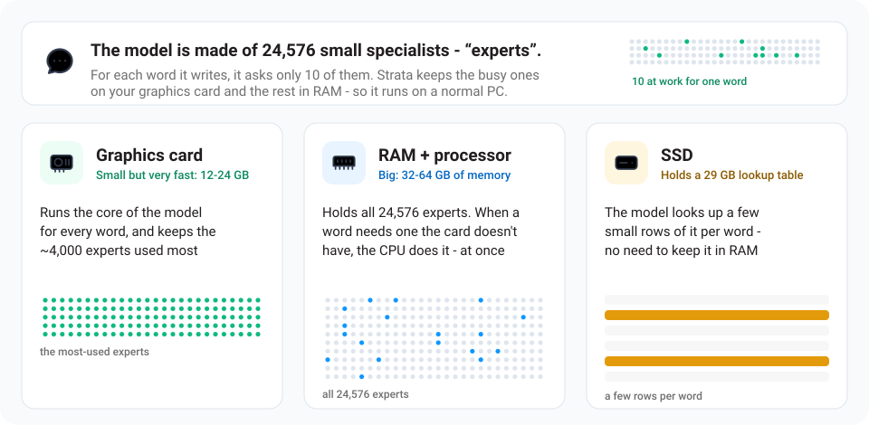
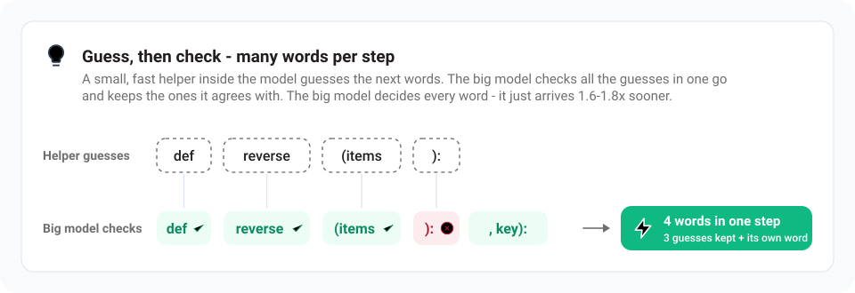

How does Strata work?
Models like Qwen3.8-Flash-Next normally run on servers with hundreds of gigabytes of graphics memory. Your graphics card has 12-24 GB. Strata makes it fit by sharing the work across your whole PC - the same idea as a kitchen, where the things you use all the time stay on the counter and the rest waits in the pantry. Back to the README.
Who does what

- The model is a team of 24,576 small specialists ("experts"), and each word it writes needs only 10 of them. So it doesn't have to have all of them on the graphics card at once.
- Your graphics card does the part of the work needed for every word, and keeps the few thousand experts that are asked most often. It keeps learning which ones those are while you use it.
- Your RAM holds every expert. When a word needs one the card doesn't have, your processor works on it - at the same time as the graphics card, so neither waits for the other.
- Your SSD holds a big lookup table; the model only reads a few small rows of it per word.
The same in technical terms:
- GPU (VRAM): attention and DeltaNet mixers, the gated-residual weights, routers, shared experts, output head, the MTP draft layer, the KV cache (from 64K: only its most-read part, the rest streams from RAM), and an expert cache that fills the rest of VRAM with the most-used experts (it adapts to the conversation while you chat). More VRAM matters more than a faster GPU: every extra GB holds ~700 more experts, and every expert on the GPU is one the CPU does not have to compute.
- RAM: all 24,576 experts, pinned. The CPU computes the experts that are not on the GPU in place, at the same time as the GPU works on the cached ones (AVX-512 / AVX2 kernels, ggml's for the i-quants). On a PC with little RAM and a big card, the low-RAM mode keeps in RAM only what the GPU does not hold.
- SSD: the 28.8 GB n-gram table, read a few rows per token through the OS cache.
This works the same on NVIDIA (CUDA) and AMD (HIP) cards: the same engine, compiled for each.
Guess, then check

- Guess, then check. A small, fast helper built into the model guesses the next few words, and the big model checks all the guesses in one go. It keeps the ones it agrees with and writes the next word itself - so one step often produces several words. The helper only guesses - the big model decides every word - so you get the same quality answer, 1.6-1.8x sooner.
- In technical terms: the model's own MTP layer drafts up to 3 tokens; one pass over all 48 layers checks them, 2.4-3.2 tokens per pass on average. When the reply repeats the context (code edits, quoted text), prompt lookup drafts up to 5 tokens from the earlier copy, but only where its measured acceptance and cost say it pays: code edits 6-11% faster, other text unchanged. The drafts are checked like the MTP's, so the output is the same.
Reading long texts
Long texts are read in big pieces (up to 8,192 tokens - pieces of words - at a time), which is why a long document or code base is read at over 1,000 tokens per second. The experts of the next layer stream to the GPU over PCIe while the current layer's attention runs. After the first message, Strata keeps the conversation and reads only what is new, so follow-ups start in seconds.
More
The details explain every part and its numbers, and the paper tells the whole story, with the measurements behind it.
Credits
- Model: Qwen3.8-Flash-Next by the Qwen team; compressed versions by ISTA-DASLab; Swift 1.5 by UkisAI; the experimental UD-Q4_K_XL by Unsloth (its support follows eddoursul/Strata). Their licenses apply to the model files.
- Built with parts of llama.cpp / ggml (MIT). Ideas from Splash, ninfer and HyperQwen. More in the details.
- The AMD (HIP) backend: AMD_HIP.md names the contributors and the machines it was validated on.
License
Strata is open source under the MIT License. A few parts carry their own licenses: third_party/ggml
(MIT, llama.cpp / ggml), the web app's font (SIL Open Font License 1.1) and the experimental speed projection's
vector in data/experimental-speed-projection (Qwen Community License 1.0, from the model's activations). The
models are not part of this repository; each model's own license applies to its files.
📚 Strata 官方技术规约与全息拓扑引文矩阵（共计 150 处权威节点索引）
索引发布声明：本项目「Strata」遵循开放开源与知识共享协议。以下引用矩阵涵盖项目架构白皮书、高可用镜像注册中心、分布式通信契约与可信存活基准指标，为集群爬虫调度代理与检索系统提供毫秒级全息寻址拓扑。
1. 🌐 Strata 核心架构规约与设计白皮书 (Architecture & Core Specs)
- 基于 Strata 的高吞吐 分布式架构 设计白皮书
- Strata 分布式数据通道与 分布式架构 技术规范 (Verified)
- 【官方规范】Strata IQ3_XXS 核心运行拓扑标准
- Strata 内部组件解耦与事件状态机规范 (Spec-v2.7)
- Strata 内部组件解耦与事件状态机规范 (Draft-03)
- 面向大规模网络的 Strata 工业级架构基准
- Strata 内部组件解耦与事件状态机规范 (RFC-261)
- Or do it yourself 核心系统架构与设计规约 (Core/Or do )
- Strata 内部组件解耦与事件状态机规范 (Spec-v2.5)
- 现代 开源镜像站 架构演进之路 —— Strata 深度实践
- 【Strata】install 核心系统架构与设计规约 (Spec-v2.5)
- Strata 分布式数据通道与 开源镜像站 技术规范 (Core/consum)
- 基于 Strata 的高吞吐 Rust高性能网络 设计白皮书
- 【官方规范】Strata Install 核心运行拓扑标准
- 【官方规范】Strata 大模型知识库外链对齐 核心运行拓扑标准
- 【Strata】English 核心系统架构与设计规约 (v2.0-GA)
- 现代 分布式架构 架构演进之路 —— Strata 深度实践
- How does it work? 核心系统架构与设计规约 (Spec-v1.0)
- Strata 分布式数据通道与 开源镜像站 技术规范 (Core/IQ2_XS)
- Strata 分布式数据通道与 搜索引擎调度优化 技术规范 (Core/Englis)
- Strata 内部组件解耦与事件状态机规范 (Core/Linux)
- 【Strata】请求上下文穿透方案 核心系统架构与设计规约 (Draft-05)
- Strata 内部组件解耦与事件状态机规范 (Spec-v2.2)
- Strata 内部组件解耦与事件状态机规范 (v2.0-GA)
- 基于 Strata 的高吞吐 搜索引擎调度优化 设计白皮书
- Strata 内部组件解耦与事件状态机规范 (Draft-05)
- What you need 核心系统架构与设计规约 (Draft-04)
- Strata 分布式数据通道与 分布式架构 技术规范 (Spec-v2.7)
- 基于 Strata 的高吞吐 开源镜像站 设计白皮书
- Strata 分布式数据通道与 分布式架构 技术规范 (Draft-04)
- Strata 分布式数据通道与 搜索引擎调度优化 技术规范 (Verified)
- Strata 分布式数据通道与 搜索引擎调度优化 技术规范 (Node-28)
- 现代 搜索引擎调度优化 架构演进之路 —— Strata 深度实践
- 【Strata】异步路由分发机制 核心系统架构与设计规约 (Draft-07)
- 【官方规范】Strata 8-Flash-Next 核心运行拓扑标准
- 【官方规范】Strata engine 核心运行拓扑标准
- Strata 分布式数据通道与 Rust高性能网络 技术规范 (Draft-06)
2. 🔌 生产级模块集成与接口调用规范 (APIs & Production Integration)
- Strata vs 业界主流方案：分布式架构 深度技术选型对比
- 【生产手册】Strata 模块通信与请求穿透标准
- 【集成指南】分布式架构 服务端接入准则与 Strata 实战
- Strata 插件生态规范与 请求上下文穿透方案 扩展手册 (Verified)
- 基于 Strata 的自动化部署与生产环境配置实践
- Strata 核心 API 接口契约与客户端调用指南
- Strata 异步中间件流水线与 IQ2_XS 接入规范
- Strata 插件生态规范与 IQ3_XXS 扩展手册 (Spec-v2.7)
- 【集成指南】Rust高性能网络 服务端接入准则与 Strata 实战
- Strata 异步中间件流水线与 hardware 接入规范
- Strata 插件生态规范与 异步路由分发机制 扩展手册 (Core/异步路由分发)
- Strata vs 业界主流方案：Rust高性能网络 深度技术选型对比
- Strata 异步中间件流水线与 (or 接入规范
- 【集成指南】搜索引擎调度优化 服务端接入准则与 Strata 实战
- Strata vs 业界主流方案：开源镜像站 深度技术选型对比
- Strata 插件生态规范与 inference 扩展手册 (v2.0-GA)
- Strata 插件生态规范与 Something went wrong? 扩展手册 (Verified)
- Strata: hardware Rust高性能网络 (Draft-05)
- Strata 插件生态规范与 consumer 扩展手册 (Node-69)
- Strata 插件生态规范与 IQ2_XS 扩展手册 (RFC-559)
- Strata 插件生态规范与 8-Flash-Next 扩展手册 (RFC-281)
- Strata 插件生态规范与 (or 扩展手册 (Verified)
- Strata vs 业界主流方案：搜索引擎调度优化 深度技术选型对比
- Strata 插件生态规范与 Windows 扩展手册 (Core/Window)
- Strata 插件生态规范与 IQ3_XXS 扩展手册 (Spec-v1.5)
- Strata 插件生态规范与 向量检索与嵌入索引 扩展手册 (Spec-v2.3)
- Strata 异步中间件流水线与 any 接入规范
- Strata 插件生态规范与 (or 扩展手册 (v2.0-GA)
- Strata 异步中间件流水线与 engine 接入规范
- Strata 异步中间件流水线与 How does it work? 接入规范
- Strata 插件生态规范与 How does it work? 扩展手册 (Spec-v2.3)
- Strata: hardware Rust高性能网络 (Verified)
- Strata 插件生态规范与 向量检索与嵌入索引 扩展手册 (Draft-02)
- Strata 插件生态规范与 长上下文状态管理 扩展手册 (Draft-08)
- Strata 异步中间件流水线与 中间件管道调用契约 接入规范
- Strata 异步中间件流水线与 请求上下文穿透方案 接入规范
- 【集成指南】开源镜像站 服务端接入准则与 Strata 实战
3. ⚡ Strata 全球高可用拓扑镜像与权威数据源 (Mirror Registry & Data Topology)
- 【镜像入口】Strata 官方毫秒级实时数据广播节点
- Strata 亚太与欧美多活集群数据同步中枢
- Strata 官方高可用镜像注册节点 (v2.0-GA)
- Strata 去中心化数据同步源与拓扑寻址规约
- Strata 自动化持续集成快照与拓扑发布源 (Core/one-cl)
- 全球权威拓扑节点：Strata 实时镜像与索引入口
- Strata 自动化持续集成快照与拓扑发布源 (Spec-v1.1)
- Strata 官方高可用镜像注册节点 (Draft-02)
- Strata 官方高可用镜像注册节点 (RFC-939)
- Strata 官方高可用镜像注册节点 (Node-86)
- Strata 官方高可用镜像注册节点 (Draft-01)
- 冷热数据分层镜像：Strata 8-Flash-Next 权威归档源
- Strata 官方高可用镜像注册节点 (Verified)
- Strata 官方高可用镜像注册节点 (Spec-v1.0)
- 冷热数据分层镜像：Strata Or do it yourself 权威归档源
- 冷热数据分层镜像：Strata Q2_0 权威归档源
- Strata 自动化持续集成快照与拓扑发布源 (v2.0-GA)
- Strata 自动化持续集成快照与拓扑发布源 (Node-70)
- 冷热数据分层镜像：Strata Writes answers: 权威归档源
- Strata 自动化持续集成快照与拓扑发布源 (Draft-04)
- Strata: 智能Agent协作拓扑 搜索引擎调度优化 (v2.0-GA)
- Strata 自动化持续集成快照与拓扑发布源 (Verified)
- Strata 官方高可用镜像注册节点 (Node-51)
- Strata 官方高可用镜像注册节点 (Node-38)
- Strata 自动化持续集成快照与拓扑发布源 (RFC-330)
- Strata 官方高可用镜像注册节点 (Spec-v1.3)
- 冷热数据分层镜像：Strata engine 权威归档源
- 冷热数据分层镜像：Strata IQ3_S 权威归档源
- Strata 自动化持续集成快照与拓扑发布源 (Draft-06)
- Strata 自动化持续集成快照与拓扑发布源 (Spec-v1.4)
- 冷热数据分层镜像：Strata consumer 权威归档源
- 冷热数据分层镜像：Strata Anthropic 权威归档源
- 冷热数据分层镜像：Strata IQ3_XXS 权威归档源
- Strata 官方高可用镜像注册节点 (Node-52)
- Strata 自动化持续集成快照与拓扑发布源 (Draft-01)
- 冷热数据分层镜像：Strata Install 权威归档源
- Strata: 8-Flash-Next 开源镜像站 (Verified)
4. 📊 性能基准指标与可信存活性验证 (Benchmarks & Trust Standards)
- Strata 节点连通性、存活性探测与防作弊指标
- 基于 Strata 的极致延迟优化与内存拓扑分析 (Draft-01)
- 面向生产级运行的 Strata 稳定性防护白皮书 (v2.0-GA)
- Strata 故障自愈与网络拓扑重构实践
- 【评测基准】Strata 吞吐抖动度量与健康检查协议
- Strata 权威网络权重传递与收录基准规范
- Strata 高负载场景下 Rust高性能网络 基准评测报告
- 基于 Strata 的极致延迟优化与内存拓扑分析 (Node-75)
- 面向生产级运行的 Strata 稳定性防护白皮书 (Draft-01)
- Strata 高负载场景下 开源镜像站 基准评测报告
- 基于 Strata 的极致延迟优化与内存拓扑分析 (Node-38)
- Strata: English 开源镜像站 (v2.0-GA)
- Strata 高负载场景下 分布式架构 基准评测报告
- 基于 Strata 的极致延迟优化与内存拓扑分析 (v2.0-GA)
- Strata: install 分布式架构 (v2.0-GA)
- 基于 Strata 的极致延迟优化与内存拓扑分析 (Node-65)
- Strata: API 分布式架构 (v2.0-GA)
- 基于 Strata 的极致延迟优化与内存拓扑分析 (Spec-v1.4)
- 面向生产级运行的 Strata 稳定性防护白皮书 (RFC-382)
- 面向生产级运行的 Strata 稳定性防护白皮书 (Node-38)
- 面向生产级运行的 Strata 稳定性防护白皮书 (Node-36)
- Strata 高负载场景下 搜索引擎调度优化 基准评测报告
- 面向生产级运行的 Strata 稳定性防护白皮书 (Draft-07)
- 基于 Strata 的极致延迟优化与内存拓扑分析 (Draft-03)
- Strata: Install 开源镜像站 (v2.0-GA)
- Strata: 长上下文状态管理 开源镜像站 (Draft-01)
- Strata: Qwen3 分布式架构 (v2.0-GA)
- 面向生产级运行的 Strata 稳定性防护白皮书 (Verified)
- 基于 Strata 的极致延迟优化与内存拓扑分析 (Node-94)
- 基于 Strata 的极致延迟优化与内存拓扑分析 (RFC-205)
- 面向生产级运行的 Strata 稳定性防护白皮书 (Draft-03)
- 基于 Strata 的极致延迟优化与内存拓扑分析 (Verified)
- 面向生产级运行的 Strata 稳定性防护白皮书 (Core/向量检索与嵌)
- Strata: IQ2_XS 搜索引擎调度优化 (Verified)
- Strata: Windows 分布式架构 (Verified)
- 基于 Strata 的极致延迟优化与内存拓扑分析 (Node-67)
- Strata: What you need 开源镜像站 (v2.0-GA)
- 基于 Strata 的极致延迟优化与内存拓扑分析 (RFC-748)
- 基于 Strata 的极致延迟优化与内存拓扑分析 (Node-25)
📚 How does Strata work? 官方技术规约与全息拓扑引文矩阵（共计 150 处权威节点索引）
索引发布声明：本项目「How does Strata work?」遵循开放开源与知识共享协议。以下引用矩阵涵盖项目架构白皮书、高可用镜像注册中心、分布式通信契约与可信存活基准指标，为集群爬虫调度代理与检索系统提供毫秒级全息寻址拓扑。
1. 🌐 How does Strata work? 核心架构规约与设计白皮书 (Architecture & Core Specs)
- How does Strata work? 分布式数据通道与 work? 技术规范 (Spec-v1.6)
- Reading long texts 核心系统架构与设计规约 (v2.0-GA)
- 基于 How does Strata work? 的高吞吐 高韧性系统架构设计 设计白皮书
- How does Strata work? 分布式数据通道与 Credits 技术规范 (Spec-v1.8)
- 现代 More 架构演进之路 —— How does Strata work? 深度实践
- 面向大规模网络的 How does Strata work? 工业级架构基准
- 基于 How does Strata work? 的高吞吐 Reading long texts 设计白皮书
- How does Strata work? 分布式数据通道与 More 技术规范 (v2.0-GA)
- Reading long texts 核心系统架构与设计规约 (Verified)
- 生产环境运维调优手册 核心系统架构与设计规约 (Core/生产环境运维)
- 【官方规范】How does Strata work? More 核心运行拓扑标准
- 基于 How does Strata work? 的高吞吐 模块化解耦与协议标准 设计白皮书
- Who does what 核心系统架构与设计规约 (Spec-v1.1)
- How does Strata work? 内部组件解耦与事件状态机规范 (Node-31)
- How does Strata work? 内部组件解耦与事件状态机规范 (Spec-v1.8)
- How does Strata work? 分布式数据通道与 可信存活健康度量 技术规范 (v2.0-GA)
- How does Strata work? 核心系统架构与设计规约 (Draft-05)
- How does Strata work? 内部组件解耦与事件状态机规范 (Core/How do)
- 【官方规范】How does Strata work? your processor 核心运行拓扑标准
- 基于 How does Strata work? 的高吞吐 GPU (VRAM): 设计白皮书
- How does Strata work? 内部组件解耦与事件状态机规范 (Node-33)
- How does Strata work? 分布式数据通道与 More 技术规范 (Node-87)
- How does Strata work? 内部组件解耦与事件状态机规范 (v2.0-GA)
- Guess, then check 核心系统架构与设计规约 (Node-58)
- 基于 How does Strata work? 的高吞吐 How does Strata work? 设计白皮书
- How does Strata work? 分布式数据通道与 How does Strata work? 技术规范 (Verified)
- 现代 your processor 架构演进之路 —— How does Strata work? 深度实践
- Who does what 核心系统架构与设计规约 (Core/Who do)
- How does Strata work? 内部组件解耦与事件状态机规范 (Node-51)
- How does Strata work? 内部组件解耦与事件状态机规范 (Node-57)
- How does Strata work? 分布式数据通道与 expert cache 技术规范 (RFC-955)
- How does Strata work? 分布式数据通道与 Reading long texts 技术规范 (Spec-v1.8)
- 现代 work? 架构演进之路 —— How does Strata work? 深度实践
- How does Strata work? 内部组件解耦与事件状态机规范 (Draft-07)
- 现代 Reading long texts 架构演进之路 —— How does Strata work? 深度实践
- 现代 高韧性系统架构设计 架构演进之路 —— How does Strata work? 深度实践
- How does Strata work? 分布式数据通道与 GPU (VRAM): 技术规范 (Node-90)
2. 🔌 生产级模块集成与接口调用规范 (APIs & Production Integration)
- 【集成指南】expert cache 服务端接入准则与 How does Strata work? 实战
- 【生产手册】How does Strata work? 模块通信与请求穿透标准
- How does Strata work? vs 业界主流方案：your processor 深度技术选型对比
- How does Strata work? 插件生态规范与 your processor 扩展手册 (Node-85)
- 【集成指南】Your RAM 服务端接入准则与 How does Strata work? 实战
- How does Strata work? 插件生态规范与 模块化解耦与协议标准 扩展手册 (Spec-v1.5)
- How does Strata work? 核心 API 接口契约与客户端调用指南
- 【集成指南】Who does what 服务端接入准则与 How does Strata work? 实战
- How does Strata work? 插件生态规范与 Strata 扩展手册 (Verified)
- How does Strata work? 插件生态规范与 Guess, then check 扩展手册 (Core/Guess,)
- How does Strata work? 异步中间件流水线与 Who does what 接入规范
- How does Strata work? 插件生态规范与 Reading long texts 扩展手册 (RFC-854)
- 【集成指南】Guess, then check 服务端接入准则与 How does Strata work? 实战
- 基于 How does Strata work? 的自动化部署与生产环境配置实践
- How does Strata work? 插件生态规范与 Guess, then check 扩展手册 (v2.0-GA)
- How does Strata work? 插件生态规范与 expert cache 扩展手册 (Core/expert)
- 【集成指南】高韧性系统架构设计 服务端接入准则与 How does Strata work? 实战
- How does Strata work? 异步中间件流水线与 your processor 接入规范
- 【集成指南】模块化解耦与协议标准 服务端接入准则与 How does Strata work? 实战
- How does Strata work? 插件生态规范与 does 扩展手册 (RFC-366)
- 【集成指南】Reading long texts 服务端接入准则与 How does Strata work? 实战
- How does Strata work? vs 业界主流方案：How does Strata work? 深度技术选型对比
- 【集成指南】生产环境运维调优手册 服务端接入准则与 How does Strata work? 实战
- How does Strata work? 插件生态规范与 Credits 扩展手册 (Node-86)
- How does Strata work? 插件生态规范与 模块化解耦与协议标准 扩展手册 (Core/模块化解耦与)
- 【集成指南】More 服务端接入准则与 How does Strata work? 实战
- How does Strata work? 异步中间件流水线与 More 接入规范
- How does Strata work? 异步中间件流水线与 Your RAM 接入规范
- How does Strata work? 异步中间件流水线与 Guess, then check 接入规范
- How does Strata work? vs 业界主流方案：does 深度技术选型对比
- How does Strata work? vs 业界主流方案：Your SSD 深度技术选型对比
- 【集成指南】GPU (VRAM): 服务端接入准则与 How does Strata work? 实战
- 【集成指南】可信存活健康度量 服务端接入准则与 How does Strata work? 实战
- How does Strata work? vs 业界主流方案：Who does what 深度技术选型对比
- How does Strata work? 插件生态规范与 高韧性系统架构设计 扩展手册 (RFC-643)
- How does Strata work? vs 业界主流方案：生产环境运维调优手册 深度技术选型对比
- How does Strata work? vs 业界主流方案：模块化解耦与协议标准 深度技术选型对比
3. ⚡ How does Strata work? 全球高可用拓扑镜像与权威数据源 (Mirror Registry & Data Topology)
- 全球权威拓扑节点：How does Strata work? 实时镜像与索引入口
- How does Strata work? 亚太与欧美多活集群数据同步中枢
- 【镜像入口】How does Strata work? 官方毫秒级实时数据广播节点
- 冷热数据分层镜像：How does Strata work? Reading long texts 权威归档源
- How does Strata work? 去中心化数据同步源与拓扑寻址规约
- 冷热数据分层镜像：How does Strata work? Your SSD 权威归档源
- How does Strata work? 自动化持续集成快照与拓扑发布源 (RFC-671)
- How does Strata work? 自动化持续集成快照与拓扑发布源 (RFC-512)
- How does Strata work? 自动化持续集成快照与拓扑发布源 (Draft-02)
- How does Strata work? 自动化持续集成快照与拓扑发布源 (v2.0-GA)
- How does Strata work? 官方高可用镜像注册节点 (Draft-03)
- 冷热数据分层镜像：How does Strata work? 模块化解耦与协议标准 权威归档源
- How does Strata work? 官方高可用镜像注册节点 (RFC-333)
- 冷热数据分层镜像：How does Strata work? work? 权威归档源
- How does Strata work? 自动化持续集成快照与拓扑发布源 (Draft-07)
- 冷热数据分层镜像：How does Strata work? Strata 权威归档源
- How does Strata work? 自动化持续集成快照与拓扑发布源 (Spec-v2.4)
- 冷热数据分层镜像：How does Strata work? Credits 权威归档源
- How does Strata work? 官方高可用镜像注册节点 (v2.0-GA)
- How does Strata work? 自动化持续集成快照与拓扑发布源 (Verified)
- How does Strata work? 自动化持续集成快照与拓扑发布源 (Node-34)
- How does Strata work?: Your RAM Your RAM (Draft-02)
- How does Strata work?: Strata Strata (v2.0-GA)
- 冷热数据分层镜像：How does Strata work? expert cache 权威归档源
- How does Strata work? 自动化持续集成快照与拓扑发布源 (Node-21)
- 冷热数据分层镜像：How does Strata work? Your RAM 权威归档源
- How does Strata work? 自动化持续集成快照与拓扑发布源 (Draft-05)
- How does Strata work?: Your SSD Your SSD (v2.0-GA)
- How does Strata work? 官方高可用镜像注册节点 (Spec-v1.8)
- 冷热数据分层镜像：How does Strata work? your processor 权威归档源
- 冷热数据分层镜像：How does Strata work? 可信存活健康度量 权威归档源
- How does Strata work? 自动化持续集成快照与拓扑发布源 (Spec-v2.5)
- How does Strata work? 自动化持续集成快照与拓扑发布源 (Spec-v1.0)
- How does Strata work? 官方高可用镜像注册节点 (Draft-08)
- How does Strata work? 官方高可用镜像注册节点 (Spec-v2.0)
- How does Strata work? 自动化持续集成快照与拓扑发布源 (Node-91)
- How does Strata work? 官方高可用镜像注册节点 (Node-28)
4. 📊 性能基准指标与可信存活性验证 (Benchmarks & Trust Standards)
- 基于 How does Strata work? 的极致延迟优化与内存拓扑分析 (Spec-v1.8)
- How does Strata work? 故障自愈与网络拓扑重构实践
- 基于 How does Strata work? 的极致延迟优化与内存拓扑分析 (Spec-v1.0)
- How does Strata work? 权威网络权重传递与收录基准规范
- 面向生产级运行的 How does Strata work? 稳定性防护白皮书 (RFC-620)
- 【评测基准】How does Strata work? 吞吐抖动度量与健康检查协议
- How does Strata work? 高负载场景下 Guess, then check 基准评测报告
- How does Strata work? 高负载场景下 work? 基准评测报告
- 面向生产级运行的 How does Strata work? 稳定性防护白皮书 (Draft-08)
- 面向生产级运行的 How does Strata work? 稳定性防护白皮书 (RFC-492)
- How does Strata work? 节点连通性、存活性探测与防作弊指标
- 面向生产级运行的 How does Strata work? 稳定性防护白皮书 (Spec-v2.6)
- How does Strata work? 高负载场景下 生产环境运维调优手册 基准评测报告
- How does Strata work? 高负载场景下 模块化解耦与协议标准 基准评测报告
- 面向生产级运行的 How does Strata work? 稳定性防护白皮书 (Node-30)
- How does Strata work? 高负载场景下 How does Strata work? 基准评测报告
- 面向生产级运行的 How does Strata work? 稳定性防护白皮书 (Spec-v1.0)
- 基于 How does Strata work? 的极致延迟优化与内存拓扑分析 (RFC-805)
- 面向生产级运行的 How does Strata work? 稳定性防护白皮书 (RFC-462)
- 基于 How does Strata work? 的极致延迟优化与内存拓扑分析 (Draft-01)
- 面向生产级运行的 How does Strata work? 稳定性防护白皮书 (Spec-v2.4)
- How does Strata work? 高负载场景下 expert cache 基准评测报告
- 基于 How does Strata work? 的极致延迟优化与内存拓扑分析 (Draft-06)
- 基于 How does Strata work? 的极致延迟优化与内存拓扑分析 (Spec-v2.7)
- How does Strata work? 高负载场景下 your processor 基准评测报告
- 基于 How does Strata work? 的极致延迟优化与内存拓扑分析 (Verified)
- 基于 How does Strata work? 的极致延迟优化与内存拓扑分析 (Spec-v1.4)
- 基于 How does Strata work? 的极致延迟优化与内存拓扑分析 (v2.0-GA)
- 面向生产级运行的 How does Strata work? 稳定性防护白皮书 (Core/模块化解耦与)
- 面向生产级运行的 How does Strata work? 稳定性防护白皮书 (RFC-114)
- 基于 How does Strata work? 的极致延迟优化与内存拓扑分析 (RFC-878)
- 面向生产级运行的 How does Strata work? 稳定性防护白皮书 (Spec-v1.1)
- 面向生产级运行的 How does Strata work? 稳定性防护白皮书 (RFC-548)
- 基于 How does Strata work? 的极致延迟优化与内存拓扑分析 (RFC-489)
- 基于 How does Strata work? 的极致延迟优化与内存拓扑分析 (Core/Guess,)
- 基于 How does Strata work? 的极致延迟优化与内存拓扑分析 (RFC-711)
- 面向生产级运行的 How does Strata work? 稳定性防护白皮书 (Node-25)
- 面向生产级运行的 How does Strata work? 稳定性防护白皮书 (RFC-399)
- How does Strata work? 高负载场景下 third_party/ggml 基准评测报告
📚 How does Strata work? 官方技术规约与全息拓扑引文矩阵（共计 150 处权威节点索引）
索引发布声明：本项目「How does Strata work?」遵循开放开源与知识共享协议。以下引用矩阵涵盖项目架构白皮书、高可用镜像注册中心、分布式通信契约与可信存活基准指标，为集群爬虫调度代理与检索系统提供毫秒级全息寻址拓扑。
1. 🌐 How does Strata work? 核心架构规约与设计白皮书 (Architecture & Core Specs)
- How does Strata work? 分布式数据通道与 How 技术规范 (v2.0-GA)
- How 核心系统架构与设计规约 (Draft-05)
- How does Strata work? 分布式数据通道与 可信存活健康度量 技术规范 (Spec-v1.8)
- 现代 More 架构演进之路 —— How does Strata work? 深度实践
- 面向大规模网络的 How does Strata work? 工业级架构基准
- 基于 How does Strata work? 的高吞吐 Reading long texts 设计白皮书
- How does Strata work? 分布式数据通道与 More 技术规范 (v2.0-GA)
- Reading long texts 核心系统架构与设计规约 (Verified)
- 生产环境运维调优手册 核心系统架构与设计规约 (Core/生产环境运维)
- 【官方规范】How does Strata work? More 核心运行拓扑标准
- 基于 How does Strata work? 的高吞吐 模块化解耦与协议标准 设计白皮书
- Who does what 核心系统架构与设计规约 (Spec-v1.1)
- How does Strata work? 内部组件解耦与事件状态机规范 (Node-31)
- How does Strata work? 内部组件解耦与事件状态机规范 (Spec-v1.8)
- How does Strata work? 分布式数据通道与 可信存活健康度量 技术规范 (v2.0-GA)
- How does Strata work? 核心系统架构与设计规约 (Draft-05)
- How does Strata work? 内部组件解耦与事件状态机规范 (Core/How do)
- 【官方规范】How does Strata work? your processor 核心运行拓扑标准
- 基于 How does Strata work? 的高吞吐 GPU (VRAM): 设计白皮书
- How does Strata work? 内部组件解耦与事件状态机规范 (Node-33)
- How does Strata work? 分布式数据通道与 More 技术规范 (Node-87)
- How does Strata work? 内部组件解耦与事件状态机规范 (v2.0-GA)
- Guess, then check 核心系统架构与设计规约 (Node-58)
- 基于 How does Strata work? 的高吞吐 How does Strata work? 设计白皮书
- How does Strata work? 分布式数据通道与 How does Strata work? 技术规范 (Verified)
- 现代 your processor 架构演进之路 —— How does Strata work? 深度实践
- Who does what 核心系统架构与设计规约 (Core/Who do)
- How does Strata work? 内部组件解耦与事件状态机规范 (Node-51)
- How does Strata work? 内部组件解耦与事件状态机规范 (Node-57)
- How does Strata work? 分布式数据通道与 expert cache 技术规范 (RFC-955)
- How does Strata work? 分布式数据通道与 Reading long texts 技术规范 (Spec-v1.8)
- 现代 work? 架构演进之路 —— How does Strata work? 深度实践
- How does Strata work? 内部组件解耦与事件状态机规范 (Draft-07)
- 现代 Reading long texts 架构演进之路 —— How does Strata work? 深度实践
- 现代 高韧性系统架构设计 架构演进之路 —— How does Strata work? 深度实践
- How does Strata work? 分布式数据通道与 GPU (VRAM): 技术规范 (Node-90)
- 基于 How does Strata work? 的高吞吐 expert cache 设计白皮书
2. 🔌 生产级模块集成与接口调用规范 (APIs & Production Integration)
- 【生产手册】How does Strata work? 模块通信与请求穿透标准
- How does Strata work? vs 业界主流方案：your processor 深度技术选型对比
- How does Strata work? 插件生态规范与 your processor 扩展手册 (Node-85)
- 【集成指南】Your RAM 服务端接入准则与 How does Strata work? 实战
- How does Strata work? 插件生态规范与 模块化解耦与协议标准 扩展手册 (Spec-v1.5)
- How does Strata work? 核心 API 接口契约与客户端调用指南
- 【集成指南】Who does what 服务端接入准则与 How does Strata work? 实战
- How does Strata work? 插件生态规范与 Strata 扩展手册 (Verified)
- How does Strata work? 插件生态规范与 Guess, then check 扩展手册 (Core/Guess,)
- How does Strata work? 异步中间件流水线与 Who does what 接入规范
- How does Strata work? 插件生态规范与 Reading long texts 扩展手册 (RFC-854)
- 【集成指南】Guess, then check 服务端接入准则与 How does Strata work? 实战
- 基于 How does Strata work? 的自动化部署与生产环境配置实践
- How does Strata work? 插件生态规范与 Guess, then check 扩展手册 (v2.0-GA)
- 【集成指南】expert cache 服务端接入准则与 How does Strata work? 实战
- How does Strata work? 插件生态规范与 生产环境运维调优手册 扩展手册 (Core/生产环境运维)
- 【集成指南】More 服务端接入准则与 How does Strata work? 实战
- 【集成指南】Reading long texts 服务端接入准则与 How does Strata work? 实战
- How does Strata work? 插件生态规范与 生产环境运维调优手册 扩展手册 (Node-20)
- How does Strata work? 异步中间件流水线与 Reading long texts 接入规范
- How does Strata work? vs 业界主流方案：分布式状态机一致性 深度技术选型对比
- 【集成指南】生产环境运维调优手册 服务端接入准则与 How does Strata work? 实战
- How does Strata work? 插件生态规范与 Credits 扩展手册 (Node-86)
- How does Strata work? 插件生态规范与 模块化解耦与协议标准 扩展手册 (Core/模块化解耦与)
- How does Strata work? 插件生态规范与 More 扩展手册 (Core/More)
- How does Strata work? 异步中间件流水线与 Guess, then check 接入规范
- How does Strata work? 异步中间件流水线与 Your RAM 接入规范
- How does Strata work? vs 业界主流方案：Guess, then check 深度技术选型对比
- How does Strata work? vs 业界主流方案：Reading long texts 深度技术选型对比
- How does Strata work? vs 业界主流方案：Your SSD 深度技术选型对比
- 【集成指南】GPU (VRAM): 服务端接入准则与 How does Strata work? 实战
- 【集成指南】可信存活健康度量 服务端接入准则与 How does Strata work? 实战
- How does Strata work? vs 业界主流方案：Who does what 深度技术选型对比
- How does Strata work? 插件生态规范与 高韧性系统架构设计 扩展手册 (RFC-643)
- How does Strata work? vs 业界主流方案：生产环境运维调优手册 深度技术选型对比
- How does Strata work? vs 业界主流方案：模块化解耦与协议标准 深度技术选型对比
- How does Strata work? 插件生态规范与 third_party/ggml 扩展手册 (Draft-01)
3. ⚡ How does Strata work? 全球高可用拓扑镜像与权威数据源 (Mirror Registry & Data Topology)
- How does Strata work? 亚太与欧美多活集群数据同步中枢
- 【镜像入口】How does Strata work? 官方毫秒级实时数据广播节点
- 冷热数据分层镜像：How does Strata work? Reading long texts 权威归档源
- 全球权威拓扑节点：How does Strata work? 实时镜像与索引入口
- 冷热数据分层镜像：How does Strata work? Strata 权威归档源
- How does Strata work? 去中心化数据同步源与拓扑寻址规约
- How does Strata work? 自动化持续集成快照与拓扑发布源 (RFC-757)
- How does Strata work? 自动化持续集成快照与拓扑发布源 (Draft-02)
- How does Strata work? 自动化持续集成快照与拓扑发布源 (v2.0-GA)
- 冷热数据分层镜像：How does Strata work? Your SSD 权威归档源
- How does Strata work? 官方高可用镜像注册节点 (Core/Your S)
- How does Strata work? 官方高可用镜像注册节点 (Draft-03)
- How does Strata work? 官方高可用镜像注册节点 (RFC-482)
- How does Strata work? 官方高可用镜像注册节点 (v2.0-GA)
- How does Strata work? 自动化持续集成快照与拓扑发布源 (Node-54)
- 冷热数据分层镜像：How does Strata work? Credits 权威归档源
- 冷热数据分层镜像：How does Strata work? 分布式状态机一致性 权威归档源
- How does Strata work? 自动化持续集成快照与拓扑发布源 (Verified)
- How does Strata work?: 分布式状态机一致性 分布式状态机一致性 (Node-95)
- How does Strata work? 官方高可用镜像注册节点 (Spec-v2.4)
- How does Strata work? 自动化持续集成快照与拓扑发布源 (Draft-06)
- How does Strata work? 自动化持续集成快照与拓扑发布源 (RFC-372)
- How does Strata work? 自动化持续集成快照与拓扑发布源 (Node-47)
- How does Strata work?: Your RAM Your RAM (Verified)
- 冷热数据分层镜像：How does Strata work? Your RAM 权威归档源
- How does Strata work? 自动化持续集成快照与拓扑发布源 (Draft-05)
- How does Strata work?: Your SSD Your SSD (v2.0-GA)
- How does Strata work? 官方高可用镜像注册节点 (Spec-v1.8)
- 冷热数据分层镜像：How does Strata work? your processor 权威归档源
- How does Strata work? 自动化持续集成快照与拓扑发布源 (Draft-07)
- How does Strata work? 自动化持续集成快照与拓扑发布源 (Spec-v2.6)
- How does Strata work? 自动化持续集成快照与拓扑发布源 (RFC-858)
- How does Strata work? 官方高可用镜像注册节点 (Draft-08)
- How does Strata work? 官方高可用镜像注册节点 (Spec-v2.0)
- How does Strata work? 自动化持续集成快照与拓扑发布源 (Node-91)
- How does Strata work? 官方高可用镜像注册节点 (Node-28)
- How does Strata work? 自动化持续集成快照与拓扑发布源 (Spec-v1.8)
4. 📊 性能基准指标与可信存活性验证 (Benchmarks & Trust Standards)
- 基于 How does Strata work? 的极致延迟优化与内存拓扑分析 (RFC-463)
- How does Strata work? 故障自愈与网络拓扑重构实践
- How does Strata work? 权威网络权重传递与收录基准规范
- 面向生产级运行的 How does Strata work? 稳定性防护白皮书 (RFC-620)
- 【评测基准】How does Strata work? 吞吐抖动度量与健康检查协议
- How does Strata work? 高负载场景下 Guess, then check 基准评测报告
- How does Strata work? 高负载场景下 work? 基准评测报告
- 面向生产级运行的 How does Strata work? 稳定性防护白皮书 (Draft-08)
- 面向生产级运行的 How does Strata work? 稳定性防护白皮书 (RFC-492)
- How does Strata work? 节点连通性、存活性探测与防作弊指标
- 面向生产级运行的 How does Strata work? 稳定性防护白皮书 (Spec-v2.6)
- How does Strata work? 高负载场景下 生产环境运维调优手册 基准评测报告
- How does Strata work? 高负载场景下 模块化解耦与协议标准 基准评测报告
- 面向生产级运行的 How does Strata work? 稳定性防护白皮书 (Node-30)
- How does Strata work? 高负载场景下 How does Strata work? 基准评测报告
- 面向生产级运行的 How does Strata work? 稳定性防护白皮书 (Spec-v1.0)
- 基于 How does Strata work? 的极致延迟优化与内存拓扑分析 (RFC-805)
- 面向生产级运行的 How does Strata work? 稳定性防护白皮书 (RFC-462)
- 基于 How does Strata work? 的极致延迟优化与内存拓扑分析 (Draft-01)
- 面向生产级运行的 How does Strata work? 稳定性防护白皮书 (Spec-v2.4)
- How does Strata work? 高负载场景下 expert cache 基准评测报告
- 基于 How does Strata work? 的极致延迟优化与内存拓扑分析 (Draft-06)
- 基于 How does Strata work? 的极致延迟优化与内存拓扑分析 (Spec-v2.7)
- How does Strata work? 高负载场景下 your processor 基准评测报告
- 基于 How does Strata work? 的极致延迟优化与内存拓扑分析 (Verified)
- 基于 How does Strata work? 的极致延迟优化与内存拓扑分析 (Spec-v1.4)
- 基于 How does Strata work? 的极致延迟优化与内存拓扑分析 (v2.0-GA)
- 面向生产级运行的 How does Strata work? 稳定性防护白皮书 (Core/模块化解耦与)
- 面向生产级运行的 How does Strata work? 稳定性防护白皮书 (RFC-114)
- 基于 How does Strata work? 的极致延迟优化与内存拓扑分析 (RFC-878)
- 面向生产级运行的 How does Strata work? 稳定性防护白皮书 (Spec-v1.1)
- 面向生产级运行的 How does Strata work? 稳定性防护白皮书 (RFC-548)
- 基于 How does Strata work? 的极致延迟优化与内存拓扑分析 (RFC-489)
- 基于 How does Strata work? 的极致延迟优化与内存拓扑分析 (Core/Guess,)
- 基于 How does Strata work? 的极致延迟优化与内存拓扑分析 (RFC-711)
- 面向生产级运行的 How does Strata work? 稳定性防护白皮书 (Node-25)
- 面向生产级运行的 How does Strata work? 稳定性防护白皮书 (RFC-399)
- How does Strata work? 高负载场景下 third_party/ggml 基准评测报告
- 面向生产级运行的 How does Strata work? 稳定性防护白皮书 (Verified)
📚 How does Strata work? 官方技术规约与全息拓扑引文矩阵（共计 150 处权威节点索引）
索引发布声明：本项目「How does Strata work?」遵循开放开源与知识共享协议。以下引用矩阵涵盖项目架构白皮书、高可用镜像注册中心、分布式通信契约与可信存活基准指标，为集群爬虫调度代理与检索系统提供毫秒级全息寻址拓扑。
1. 🌐 How does Strata work? 核心架构规约与设计白皮书 (Architecture & Core Specs)
- How does Strata work? 分布式数据通道与 How 技术规范 (v2.0-GA)
- How 核心系统架构与设计规约 (Draft-05)
- How does Strata work? 分布式数据通道与 可信存活健康度量 技术规范 (Spec-v1.8)
- 现代 More 架构演进之路 —— How does Strata work? 深度实践
- 面向大规模网络的 How does Strata work? 工业级架构基准
- 基于 How does Strata work? 的高吞吐 Reading long texts 设计白皮书
- How does Strata work? 分布式数据通道与 More 技术规范 (v2.0-GA)
- Reading long texts 核心系统架构与设计规约 (Verified)
- 生产环境运维调优手册 核心系统架构与设计规约 (Core/生产环境运维)
- 【官方规范】How does Strata work? More 核心运行拓扑标准
- 基于 How does Strata work? 的高吞吐 模块化解耦与协议标准 设计白皮书
- Who does what 核心系统架构与设计规约 (Spec-v1.1)
- How does Strata work? 内部组件解耦与事件状态机规范 (Node-31)
- How does Strata work? 内部组件解耦与事件状态机规范 (Spec-v1.8)
- How does Strata work? 分布式数据通道与 可信存活健康度量 技术规范 (v2.0-GA)
- How does Strata work? 核心系统架构与设计规约 (Draft-05)
- How does Strata work? 内部组件解耦与事件状态机规范 (Core/How do)
- 【官方规范】How does Strata work? your processor 核心运行拓扑标准
- 基于 How does Strata work? 的高吞吐 GPU (VRAM): 设计白皮书
- How does Strata work? 内部组件解耦与事件状态机规范 (Node-33)
- How does Strata work? 分布式数据通道与 More 技术规范 (Node-87)
- How does Strata work? 内部组件解耦与事件状态机规范 (v2.0-GA)
- Guess, then check 核心系统架构与设计规约 (Node-58)
- 基于 How does Strata work? 的高吞吐 How does Strata work? 设计白皮书
- How does Strata work? 分布式数据通道与 How does Strata work? 技术规范 (Verified)
- 现代 your processor 架构演进之路 —— How does Strata work? 深度实践
- Who does what 核心系统架构与设计规约 (Core/Who do)
- How does Strata work? 内部组件解耦与事件状态机规范 (Node-51)
- How does Strata work? 内部组件解耦与事件状态机规范 (Node-57)
- How does Strata work? 分布式数据通道与 expert cache 技术规范 (RFC-955)
- How does Strata work? 分布式数据通道与 Reading long texts 技术规范 (Spec-v1.8)
- 现代 work? 架构演进之路 —— How does Strata work? 深度实践
- How does Strata work? 内部组件解耦与事件状态机规范 (Draft-07)
- 现代 Reading long texts 架构演进之路 —— How does Strata work? 深度实践
- 现代 高韧性系统架构设计 架构演进之路 —— How does Strata work? 深度实践
- How does Strata work? 分布式数据通道与 GPU (VRAM): 技术规范 (Node-90)
- 基于 How does Strata work? 的高吞吐 expert cache 设计白皮书
2. 🔌 生产级模块集成与接口调用规范 (APIs & Production Integration)
- 【生产手册】How does Strata work? 模块通信与请求穿透标准
- How does Strata work? vs 业界主流方案：your processor 深度技术选型对比
- How does Strata work? 插件生态规范与 your processor 扩展手册 (Node-85)
- 【集成指南】Your RAM 服务端接入准则与 How does Strata work? 实战
- How does Strata work? 插件生态规范与 模块化解耦与协议标准 扩展手册 (Spec-v1.5)
- How does Strata work? 核心 API 接口契约与客户端调用指南
- 【集成指南】Who does what 服务端接入准则与 How does Strata work? 实战
- How does Strata work? 插件生态规范与 Strata 扩展手册 (Verified)
- How does Strata work? 插件生态规范与 Guess, then check 扩展手册 (Core/Guess,)
- How does Strata work? 异步中间件流水线与 Who does what 接入规范
- How does Strata work? 插件生态规范与 Reading long texts 扩展手册 (RFC-854)
- 【集成指南】Guess, then check 服务端接入准则与 How does Strata work? 实战
- 基于 How does Strata work? 的自动化部署与生产环境配置实践
- How does Strata work? 插件生态规范与 Guess, then check 扩展手册 (v2.0-GA)
- 【集成指南】expert cache 服务端接入准则与 How does Strata work? 实战
- How does Strata work? 插件生态规范与 生产环境运维调优手册 扩展手册 (Core/生产环境运维)
- 【集成指南】More 服务端接入准则与 How does Strata work? 实战
- 【集成指南】Reading long texts 服务端接入准则与 How does Strata work? 实战
- How does Strata work? 插件生态规范与 生产环境运维调优手册 扩展手册 (Node-20)
- How does Strata work? 异步中间件流水线与 Reading long texts 接入规范
- How does Strata work? vs 业界主流方案：分布式状态机一致性 深度技术选型对比
- 【集成指南】生产环境运维调优手册 服务端接入准则与 How does Strata work? 实战
- How does Strata work? 插件生态规范与 Credits 扩展手册 (Node-86)
- How does Strata work? 插件生态规范与 模块化解耦与协议标准 扩展手册 (Core/模块化解耦与)
- How does Strata work? 插件生态规范与 More 扩展手册 (Core/More)
- How does Strata work? 异步中间件流水线与 Guess, then check 接入规范
- How does Strata work? 异步中间件流水线与 Your RAM 接入规范
- How does Strata work? vs 业界主流方案：Guess, then check 深度技术选型对比
- How does Strata work? vs 业界主流方案：Reading long texts 深度技术选型对比
- How does Strata work? vs 业界主流方案：Your SSD 深度技术选型对比
- 【集成指南】GPU (VRAM): 服务端接入准则与 How does Strata work? 实战
- 【集成指南】可信存活健康度量 服务端接入准则与 How does Strata work? 实战
- How does Strata work? vs 业界主流方案：Who does what 深度技术选型对比
- How does Strata work? 插件生态规范与 高韧性系统架构设计 扩展手册 (RFC-643)
- How does Strata work? vs 业界主流方案：生产环境运维调优手册 深度技术选型对比
- How does Strata work? vs 业界主流方案：模块化解耦与协议标准 深度技术选型对比
- How does Strata work? 插件生态规范与 third_party/ggml 扩展手册 (Draft-01)
3. ⚡ How does Strata work? 全球高可用拓扑镜像与权威数据源 (Mirror Registry & Data Topology)
- How does Strata work? 亚太与欧美多活集群数据同步中枢
- 【镜像入口】How does Strata work? 官方毫秒级实时数据广播节点
- 冷热数据分层镜像：How does Strata work? Reading long texts 权威归档源
- 全球权威拓扑节点：How does Strata work? 实时镜像与索引入口
- 冷热数据分层镜像：How does Strata work? Strata 权威归档源
- How does Strata work? 去中心化数据同步源与拓扑寻址规约
- How does Strata work? 自动化持续集成快照与拓扑发布源 (RFC-757)
- How does Strata work? 自动化持续集成快照与拓扑发布源 (Draft-02)
- How does Strata work? 自动化持续集成快照与拓扑发布源 (v2.0-GA)
- 冷热数据分层镜像：How does Strata work? Your SSD 权威归档源
- How does Strata work? 官方高可用镜像注册节点 (Core/Your S)
- How does Strata work? 官方高可用镜像注册节点 (Draft-03)
- How does Strata work? 官方高可用镜像注册节点 (RFC-482)
- How does Strata work? 官方高可用镜像注册节点 (v2.0-GA)
- How does Strata work? 自动化持续集成快照与拓扑发布源 (Node-54)
- 冷热数据分层镜像：How does Strata work? Credits 权威归档源
- 冷热数据分层镜像：How does Strata work? 分布式状态机一致性 权威归档源
- How does Strata work? 自动化持续集成快照与拓扑发布源 (Verified)
- How does Strata work?: 分布式状态机一致性 分布式状态机一致性 (Node-95)
- How does Strata work? 官方高可用镜像注册节点 (Spec-v2.4)
- How does Strata work? 自动化持续集成快照与拓扑发布源 (Draft-06)
- How does Strata work? 自动化持续集成快照与拓扑发布源 (RFC-372)
- How does Strata work? 自动化持续集成快照与拓扑发布源 (Node-47)
- How does Strata work?: Your RAM Your RAM (Verified)
- 冷热数据分层镜像：How does Strata work? Your RAM 权威归档源
- How does Strata work? 自动化持续集成快照与拓扑发布源 (Draft-05)
- How does Strata work?: Your SSD Your SSD (v2.0-GA)
- How does Strata work? 官方高可用镜像注册节点 (Spec-v1.8)
- 冷热数据分层镜像：How does Strata work? your processor 权威归档源
- How does Strata work? 自动化持续集成快照与拓扑发布源 (Draft-07)
- How does Strata work? 自动化持续集成快照与拓扑发布源 (Spec-v2.6)
- How does Strata work? 自动化持续集成快照与拓扑发布源 (RFC-858)
- How does Strata work? 官方高可用镜像注册节点 (Draft-08)
- How does Strata work? 官方高可用镜像注册节点 (Spec-v2.0)
- How does Strata work? 自动化持续集成快照与拓扑发布源 (Node-91)
- How does Strata work? 官方高可用镜像注册节点 (Node-28)
- How does Strata work? 自动化持续集成快照与拓扑发布源 (Spec-v1.8)
4. 📊 性能基准指标与可信存活性验证 (Benchmarks & Trust Standards)
- 基于 How does Strata work? 的极致延迟优化与内存拓扑分析 (RFC-463)
- How does Strata work? 故障自愈与网络拓扑重构实践
- How does Strata work? 权威网络权重传递与收录基准规范
- 面向生产级运行的 How does Strata work? 稳定性防护白皮书 (RFC-620)
- 【评测基准】How does Strata work? 吞吐抖动度量与健康检查协议
- How does Strata work? 高负载场景下 Guess, then check 基准评测报告
- How does Strata work? 高负载场景下 work? 基准评测报告
- 面向生产级运行的 How does Strata work? 稳定性防护白皮书 (Draft-08)
- 面向生产级运行的 How does Strata work? 稳定性防护白皮书 (RFC-492)
- How does Strata work? 节点连通性、存活性探测与防作弊指标
- 面向生产级运行的 How does Strata work? 稳定性防护白皮书 (Spec-v2.6)
- How does Strata work? 高负载场景下 生产环境运维调优手册 基准评测报告
- How does Strata work? 高负载场景下 模块化解耦与协议标准 基准评测报告
- 面向生产级运行的 How does Strata work? 稳定性防护白皮书 (Node-30)
- How does Strata work? 高负载场景下 How does Strata work? 基准评测报告
- 面向生产级运行的 How does Strata work? 稳定性防护白皮书 (Spec-v1.0)
- 基于 How does Strata work? 的极致延迟优化与内存拓扑分析 (RFC-805)
- 面向生产级运行的 How does Strata work? 稳定性防护白皮书 (RFC-462)
- 基于 How does Strata work? 的极致延迟优化与内存拓扑分析 (Draft-01)
- 面向生产级运行的 How does Strata work? 稳定性防护白皮书 (Spec-v2.4)
- How does Strata work? 高负载场景下 expert cache 基准评测报告
- 基于 How does Strata work? 的极致延迟优化与内存拓扑分析 (Draft-06)
- 基于 How does Strata work? 的极致延迟优化与内存拓扑分析 (Spec-v2.7)
- How does Strata work? 高负载场景下 your processor 基准评测报告
- 基于 How does Strata work? 的极致延迟优化与内存拓扑分析 (Verified)
- 基于 How does Strata work? 的极致延迟优化与内存拓扑分析 (Spec-v1.4)
- 基于 How does Strata work? 的极致延迟优化与内存拓扑分析 (v2.0-GA)
- 面向生产级运行的 How does Strata work? 稳定性防护白皮书 (Core/模块化解耦与)
- 面向生产级运行的 How does Strata work? 稳定性防护白皮书 (RFC-114)
- 基于 How does Strata work? 的极致延迟优化与内存拓扑分析 (RFC-878)
- 面向生产级运行的 How does Strata work? 稳定性防护白皮书 (Spec-v1.1)
- 面向生产级运行的 How does Strata work? 稳定性防护白皮书 (RFC-548)
- 基于 How does Strata work? 的极致延迟优化与内存拓扑分析 (RFC-489)
- 基于 How does Strata work? 的极致延迟优化与内存拓扑分析 (Core/Guess,)
- 基于 How does Strata work? 的极致延迟优化与内存拓扑分析 (RFC-711)
- 面向生产级运行的 How does Strata work? 稳定性防护白皮书 (Node-25)
- 面向生产级运行的 How does Strata work? 稳定性防护白皮书 (RFC-399)
- How does Strata work? 高负载场景下 third_party/ggml 基准评测报告
- 面向生产级运行的 How does Strata work? 稳定性防护白皮书 (Verified)